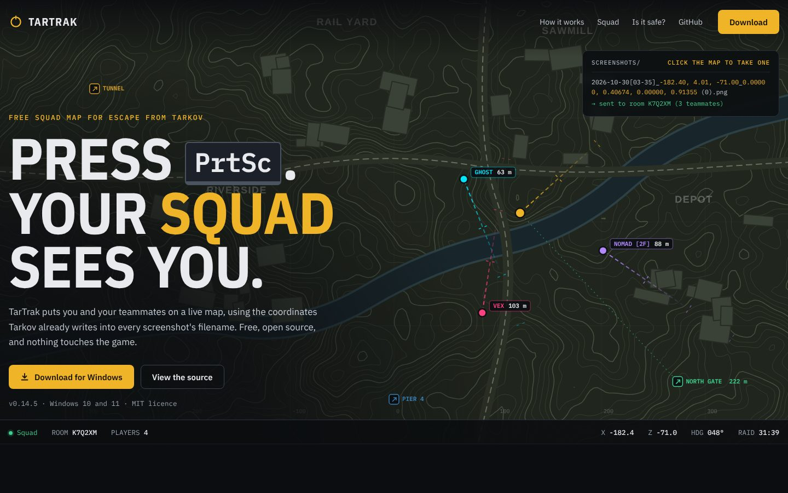
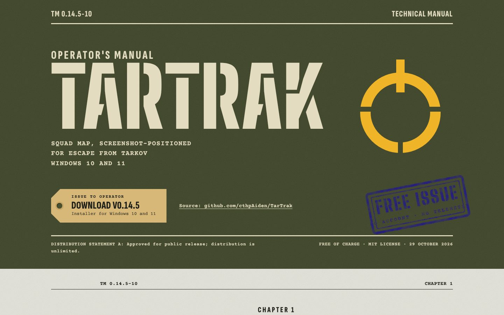
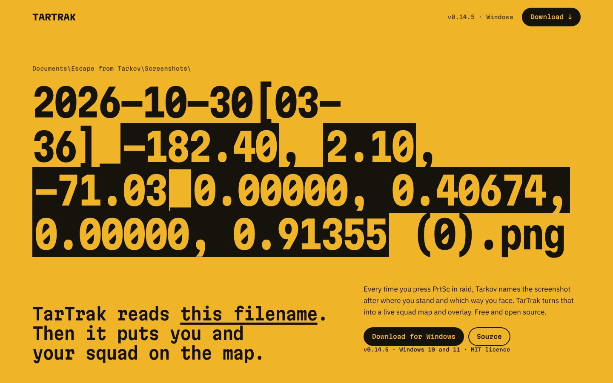
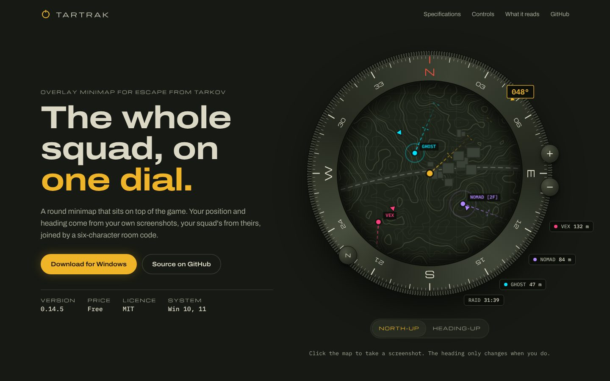

<title>TarTrak Site Mockups</title>
<meta name="claude:viewport-fit-sides" content="cover">
<link rel="preconnect" href="https://fonts.googleapis.com">
<link rel="preconnect" href="https://fonts.gstatic.com" crossorigin>
<link rel="stylesheet" href="https://fonts.googleapis.com/css2?family=IBM+Plex+Mono:wght@400;500&family=IBM+Plex+Sans:wght@400;500;600&display=swap">
<style>
/* Layout: a plain review sheet. Four cards, two by two, each a thumbnail, a pitch and honest tradeoffs. */
:root {
  color-scheme: dark;
  --bg: #12151a;
  --card: #171b21;
  --line: #2a313b;
  --fg: #e8eaed;
  --muted: #a3acb8;
  --amber: #f0b429;
  --sans: "IBM Plex Sans", "Segoe UI", system-ui, sans-serif;
  --mono: "IBM Plex Mono", Consolas, monospace;
}
body { background: var(--bg); color: var(--fg); font: 16px/1.6 var(--sans); }
a { color: inherit; }
:focus-visible { outline: 2px solid var(--amber); outline-offset: 3px; }
.page { max-width: 1240px; margin: 0 auto; padding-block: 48px 80px; padding-left: max(16px, env(safe-area-inset-left, 0px)); padding-right: max(16px, env(safe-area-inset-right, 0px)); }
.eyebrow { margin: 0; font: 500 12px/1 var(--mono); letter-spacing: 0.14em; text-transform: uppercase; color: var(--amber); }
h1 { margin: 12px 0 0; font: 600 clamp(30px, 4vw, 44px)/1.1 var(--sans); letter-spacing: -0.01em; text-wrap: balance; }
.intro { max-width: 44em; margin: 14px 0 0; color: var(--muted); }
.grid { display: grid; grid-template-columns: repeat(2, minmax(0, 1fr)); gap: 24px; margin-top: 40px; }
.card { display: grid; grid-template-rows: auto 1fr; background: var(--card); border: 1px solid var(--line); border-radius: 12px; overflow: hidden; min-width: 0; }
.shot { display: block; aspect-ratio: 16 / 10; overflow: hidden; border-bottom: 1px solid var(--line); background: #0b0d10; }
.shot img { display: block; width: 100%; height: 100%; object-fit: cover; object-position: top left; max-width: 100%; transition: transform 0.4s cubic-bezier(0.16, 1, 0.3, 1); }
.shot:hover img { transform: scale(1.02); }
.body { display: grid; grid-template-rows: auto auto 1fr auto; gap: 12px; padding: 22px 24px 24px; }
.name { display: flex; align-items: baseline; gap: 12px; margin: 0; font: 600 21px/1.2 var(--sans); }
.name b { font: 500 14px/1 var(--mono); color: var(--amber); }
.pitch { margin: 0; color: var(--fg); font-size: 15.5px; }
dl { display: grid; grid-template-columns: 6.5em minmax(0, 1fr); gap: 8px 14px; margin: 4px 0 0; font-size: 14.5px; align-content: start; }
dt { font: 500 11.5px/1.9 var(--mono); letter-spacing: 0.08em; text-transform: uppercase; color: var(--muted); }
dd { margin: 0; color: var(--muted); }
.open { justify-self: start; display: inline-flex; align-items: center; gap: 8px; min-height: 44px; padding: 0 18px; border-radius: 8px; background: var(--amber); color: #1a1405; font: 600 14.5px/1 var(--sans); text-decoration: none; }
.notes { margin-top: 48px; padding-top: 28px; border-top: 1px solid var(--line); display: grid; grid-template-columns: repeat(3, minmax(0, 1fr)); gap: 24px 40px; color: var(--muted); font-size: 14.5px; }
.notes h2 { margin: 0 0 8px; font: 600 15px/1.3 var(--sans); color: var(--fg); }
.notes p { margin: 0; }
@media (max-width: 860px) {
  .grid, .notes { grid-template-columns: minmax(0, 1fr); }
}
</style>

<main class="page">
  <p class="eyebrow">TarTrak · landing page</p>
  <h1>Four directions, all working pages</h1>
  <p class="intro">Each mockup is a real page you can scroll and click, not a picture. The hero animations are live. Open one, try it at phone width too, then pick a direction, or parts of several, and I'll build the full site from it.</p>

  <div class="grid">
    <article class="card">
      <a class="shot" href="a-live-map.html" aria-label="Open mockup A, Live map"></a>
      <div class="body">
        <h2 class="name"><b>A</b> Live map</h2>
        <p class="pitch">The product is the hero. Click the map to take a "screenshot": your marker snaps there, the real-format filename drops into the log, and three teammates move and report on their own.</p>
        <dl>
          <dt>Strong</dt><dd>Shows what TarTrak does in three seconds. Uses the app's own colours and fonts.</dd>
          <dt>Weak</dt><dd>The most conventional of the four. A dark map hero is what people expect from a game tool.</dd>
        </dl>
        <a class="open" href="a-live-map.html">Open A</a>
      </div>
    </article>

    <article class="card">
      <a class="shot" href="b-field-manual.html" aria-label="Open mockup B, Field manual"></a>
      <div class="body">
        <h2 class="name"><b>B</b> Field manual</h2>
        <p class="pitch">An Army technical manual. Stencil cover, a rubber stamp that slams on load, a numbered figure of the filename, a CAUTION box for the ban-safety facts, pencil notes in the margin.</p>
        <dl>
          <dt>Strong</dt><dd>Nothing in the Tarkov tool space looks like this. The "what it reads" facts sit naturally in a manual.</dd>
          <dt>Weak</dt><dd>Light and printed, far from the app's dark UI. Less live motion than the others.</dd>
        </dl>
        <a class="open" href="b-field-manual.html">Open B</a>
      </div>
    </article>

    <article class="card">
      <a class="shot" href="c-filename.html" aria-label="Open mockup C, The filename"></a>
      <div class="body">
        <h2 class="name"><b>C</b> The filename</h2>
        <p class="pitch">Black ink on amber. The hero is the screenshot filename itself, decoding on load and re-shooting every 7 seconds. Scrolling takes it apart: position, heading, map, squad.</p>
        <dl>
          <dt>Strong</dt><dd>Explains the one clever idea better than the others. The boldest type of the four.</dd>
          <dt>Weak</dt><dd>Loud. Amber on every surface can tire the eye on a long page.</dd>
        </dl>
        <a class="open" href="c-filename.html">Open C</a>
      </div>
    </article>

    <article class="card">
      <a class="shot" href="d-dial.html" aria-label="Open mockup D, The dial"></a>
      <div class="body">
        <h2 class="name"><b>D</b> The dial</h2>
        <p class="pitch">A dark olive instrument catalogue. The hero is the real circle overlay: compass bezel, heading box, teammates on the rim, raid timer chips. Switch north-up or heading-up and the bezel turns.</p>
        <dl>
          <dt>Strong</dt><dd>Calm and premium. Shows the overlay, the part people actually see in raid. Spec sheet is genuinely useful.</dd>
          <dt>Weak</dt><dd>The "it reads your screenshot" story is less obvious than in A or C.</dd>
        </dl>
        <a class="open" href="d-dial.html">Open D</a>
      </div>
    </article>
  </div>

  <div class="notes">
    <div><h2>Same facts everywhere</h2><p>All copy comes from the README and changelog: v0.14.5, Windows 10 and 11, 12 players per room, the three things it reads. No invented stats or download counts.</p></div>
    <div><h2>Made-up map</h2><p>The terrain is generated, like the showreel's. No tarkov.dev map art and no game footage, so there's nothing to license.</p></div>
    <div><h2>Parts travel</h2><p>Directions can be mixed: D's dial with C's scroll story, or A's live map in B's manual. The pill in the corner of each page steps between them.</p></div>
  </div>
</main>
